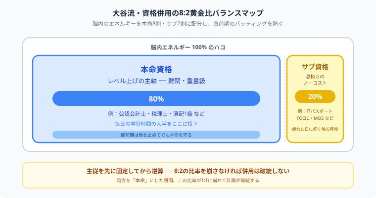

大学生は資格勉強を2つ以上併用すべき？1つに絞るべき？後悔しない選び方【2026年版】
「就活で有利になりたいから、簿記もTOEICもFPも全部同時に進めよう！」と焦って、テキストを何冊も買って「うわっ、なんじゃこりゃ、どれも中途半端で頭パンクするわ！」とフリーズしていませんか？（笑）気持ち、めちゃくちゃわかります。
僕は今、公認会計士という超巨大な難関資格と毎日1本集中で格闘しています。だからこそ痛感するのが、「本命」と「サブ」を同じ熱量で追いかけると、両方とも中途半端に終わるということ。履歴書で確実に大無双するには、あれもこれもじゃなく、本命資格とサブ資格のガチの主従逆算戦略が要るんです。同じキャンパスライフを送る仲間の目線で、その組み立て方を今日は熱くナビゲートします！
また、記事の末尾のほうにある【いいねボタン】をポチッと押してもらえると、僕の毎日の勉強と執筆のモチベーションになるので、めちゃくちゃ嬉しいです！それでは、一緒に武器の揃え方を整理していきましょう！
結論：大学生は「何でも併用」は危険
先に結論を言うと、大学生が資格勉強を2つ以上同時に進めるのは、条件付きならアリです。ただし、相性の悪い資格を同時にやると、どちらも中途半端になりやすいです。
特に、どちらも重い資格を同時に始めるのはかなり危険です。大学の授業、課題、サークル、バイト、就活準備まである中で、勉強負荷が高すぎると続かなくなる可能性が高いです。
1つに絞った方がいい大学生
そもそも毎日勉強するリズムがない段階で2つ以上に手を出すと、どちらも止まりやすいです。まずは1つを続け切る成功体験を作る方が強いです。
資格勉強には、テキストの回し方、過去問の使い方、試験日から逆算する感覚など、独特の慣れが必要です。最初は1つで十分です。
公認会計士、税理士、社労士、宅建＋他重め資格など、1つでも十分重いものは一本集中が基本です。中途半端に広げるより、1つを深く進める方が結果が出やすいです。
短期間で成果を見せたいなら、1つを確実に取り切る方が履歴書にも書きやすいです。「2つ始めたけど未取得」より「1つ取り切った」の方が圧倒的に強いです。
2つ以上を併用してもいい大学生
毎日30分〜1時間でも安定して勉強できる人なら、複数資格の併用も現実的です。時間管理の土台がある人は、2本走らせても崩れにくいです。
「本命は簿記3級、サブでTOEIC」「本命はFP3級、サブでMOS」のように主従がはっきりしているなら併用しやすいです。両方を本命にすると失速しやすいです。
内容や使う場面が近い資格は併用しやすいです。たとえば簿記とFP、ITパスポートと基本情報のように、知識が少しつながるものは相乗効果があります。
数ヶ月で終わる軽めの資格と、長めの資格を重ねるのは比較的やりやすいです。ずっと両方重いと、学期中に崩れやすくなります。
大学生に向いている現実的な組み合わせ
| 組み合わせ | 向いている人 | 理由 |
|---|---|---|
| ITパスポート + 簿記3級 | 就活の土台を広く作りたい人 | どちらも比較的軽く、履歴書でも説明しやすい |
| FP3級 + 簿記3級 | 金融・事務・営業系に興味がある人 | お金の知識がつながりやすい |
| TOEIC + MOS | 事務・一般企業志望の人 | 語学とPCスキルで就活向けに見せやすい |
| ITパスポート + TOEIC | 文系でIT企業も視野に入れたい人 | 就活で汎用性が高い組み合わせ |

上の図のように、脳内のエネルギーを本命資格という大きなハコと、サブ資格という小さなハコに分けて配分するのが大谷流です。この黄金比を守れば、両者の直前期が重なっても本命側が揺らぐことはありません。主従を先に決めてから逆算で計画を組むのが、併用を成功させる一番の近道です。
併用しない方がいいパターン
- どちらも難関で、どちらも本命
- 試験日が近く、直前期がかぶる
- 内容がまったく違い、切り替えコストが高い
- 大学の授業やバイトが忙しく、毎日勉強時間がほぼ取れない
この条件がそろうと、計画上は美しくても実際にはかなり苦しいです。特に直前期が重なると、どちらも浅く終わるリスクが高いです。
迷ったらどう決めるべきか
まずは「就活で見せたい1本」を決める
大学生は、何本も広げる前に「まずこれを取る」と言える1本を持った方が強いです。就活で説明しやすく、実際に取り切れる資格を主軸に置くのがおすすめです。
サブ資格は軽くて相性が良いものにする
本命の邪魔をしないものに限るべきです。短期間で終わるもの、または本命と知識がつながるものを選ぶと失敗しにくいです。
1学期に1つ、長くても2つくらいで考える
大学生は学期ごとに生活リズムが変わるので、半年で何本も詰め込むより、「今学期はこれ」と区切る方が現実的です。
⚔ 併用するなら、記録して崩れない仕組みを作ろう
Study Questなら、毎日の勉強時間を記録しながら、どの資格にどれだけ時間を使ったかを見える化できます。
資格併用でも一本集中でも、勉強を止めにくい流れを作れます。完全無料。
まとめ
- 大学生の資格勉強は、最初は1本集中の方が成功しやすい
- 併用するなら、主軸とサブを分けることが大切
- 軽めで相性の良い組み合わせなら複数でも回しやすい
- 難関資格どうしの併用や、直前期が重なる組み合わせは危険
- 迷ったら「就活で見せたい1本」を先に決めるのが基本
焦って手を広げたくなる気持ち、僕も痛いほどわかります。でも本命を8割、サブを2割で分けて、1歩ずつ着実に武器を揃えていけば、履歴書は必ず強くなります。同じキャンパスライフを戦う仲間として、この記事がその一歩の後押しになれば本当に嬉しいです。
ここまで読んでくれてありがとうございます！もしこの記事が役に立ったら、僕の毎日の勉強と執筆のモチベーション維持のために、この下にある【いいねボタン】をポチッと押してもらえると、めちゃくちゃ励みになります。一緒に着実に積み上げていきましょう！